Para el administrador de InvitacionesPremium
Prepara la cuenta del salón, entrega el evento al encargado y comprueba que la recepción está lista.
De la cuenta a la recepción
De la cuenta a la recepción
PASO 1Abre el panel administrativo con la dirección que utilizas habitualmente. Escribe tu correo y contraseña y selecciona «Entrar al panel».
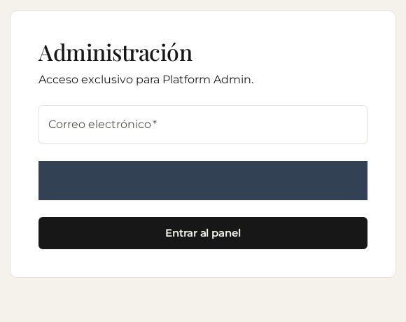
Escritorio · Ejemplo ficticio · Datos privados ocultos con franjas oscuras
Lo que debes verVes la navegación de administración.
De la cuenta a la recepción
PASO 2Abre «Clientes» y selecciona «Crear organizacion».
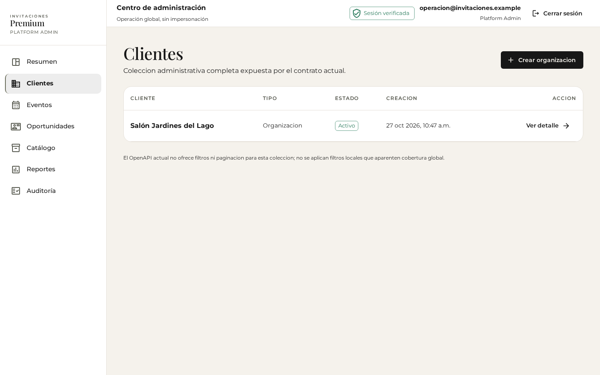
Escritorio · Ejemplo ficticio
Lo que debes verSe abre el formulario de alta del salón.
De la cuenta a la recepción
PASO 3Completa el nombre del salón, el correo de su administrador y la contraseña inicial. Conserva «Gestionado por InvitacionesPremium» y selecciona «Crear organizacion».
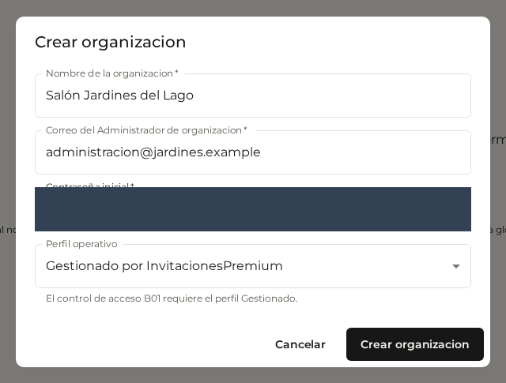
Escritorio · Ejemplo ficticio · Datos privados ocultos con franjas oscuras
Lo que debes verSe abre la ficha del salón. Entrega las credenciales al responsable por un medio privado.
De la cuenta a la recepción
PASO 4Busca «Preparar salón para control de acceso».
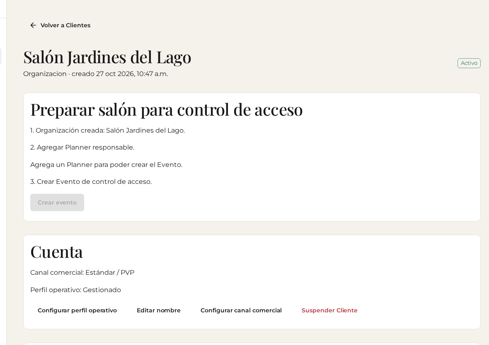
Escritorio · Ejemplo ficticio
Lo que debes verLa guía indica que necesitas agregar un responsable antes de crear el evento.
De la cuenta a la recepción
PASO 5Selecciona «Agregar planner», escribe el correo del coordinador y una contraseña temporal. Después, selecciona «Guardar».
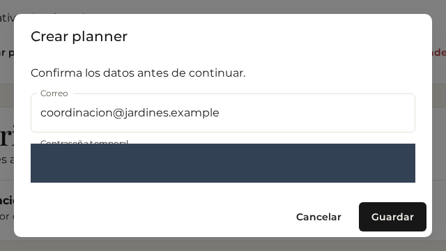
Escritorio · Ejemplo ficticio · Datos privados ocultos con franjas oscuras
Lo que debes verEl correo aparece en la lista de usuarios del salón. Entrega su acceso de forma privada.
De la cuenta a la recepción
PASO 6Selecciona «Crear evento». Escribe el nombre, elige la opción nominal en «Modalidad de acceso», indica capacidad 30 y selecciona al responsable. Confirma con «Crear evento».
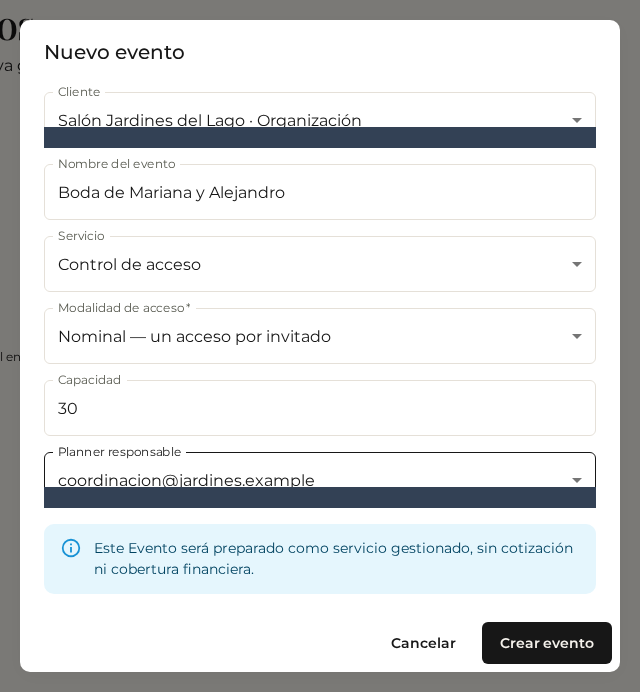
Escritorio · Ejemplo ficticio · Datos privados ocultos con franjas oscuras
Lo que debes verSe abre la preparación del evento. Esta opción usa un código por persona registrada.
De la cuenta a la recepción
PASO 7Para trabajar sin nombres, crea otro evento y elige la opción anónima en «Modalidad de acceso». Completa capacidad y responsable; selecciona «Crear evento».
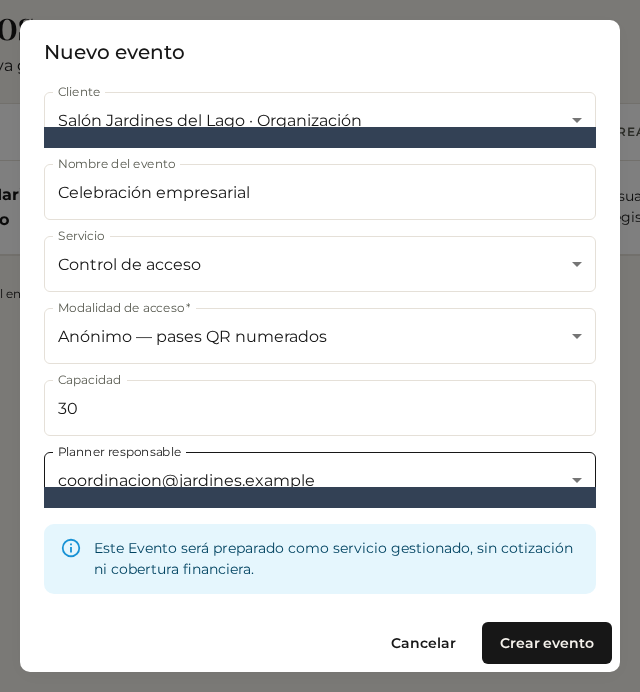
Escritorio · Ejemplo ficticio · Datos privados ocultos con franjas oscuras
Lo que debes verEl evento utilizará pases con folios. Cada evento conserva una sola modalidad.
De la cuenta a la recepción
PASO 8Elige el tipo de evento y completa fecha, hora y zona horaria. Selecciona «Guardar datos».
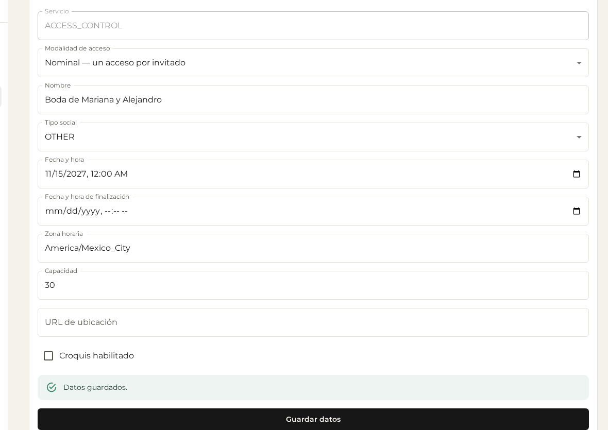
Escritorio · Ejemplo ficticio · Datos privados ocultos con franjas oscuras
Lo que debes verAparece «Datos guardados.». Verifica que la fecha y la hora sean las acordadas.
De la cuenta a la recepción
PASO 9Abre «Accesos» y revisa los requisitos pendientes.
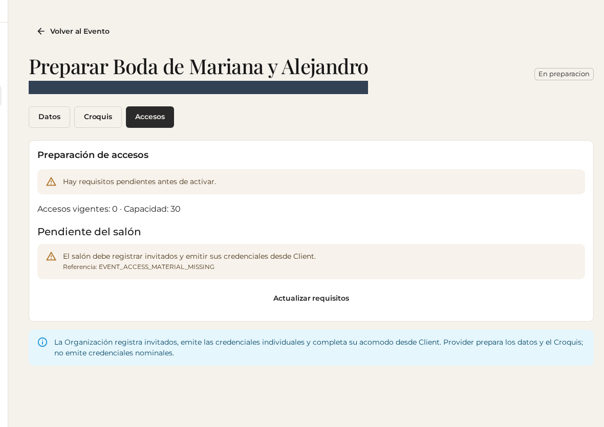
Escritorio · Ejemplo ficticio · Datos privados ocultos con franjas oscuras
Lo que debes verEn un evento con lista, el salón debe registrar invitados y emitir sus códigos. InvitacionesPremium completa los datos y prepara el Croquis si se acordó.
De la cuenta a la recepción
PASO 10En el evento sin lista, escribe la cantidad en «Cantidad de pases» y selecciona «Generar lote».
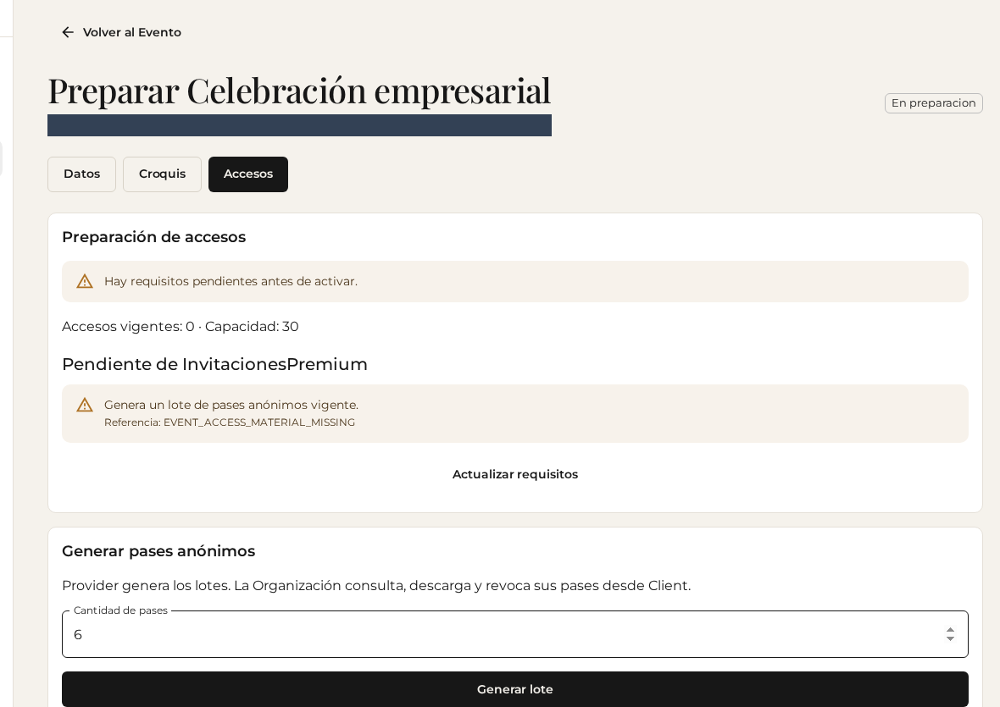
Escritorio · Ejemplo ficticio · Datos privados ocultos con franjas oscuras
Lo que debes verLa confirmación muestra la cantidad y los folios creados. El salón puede revisarlos y descargarlos.
De la cuenta a la recepción
PASO 11En «Accesos», comprueba que aparece «Accesos listos para activar.».
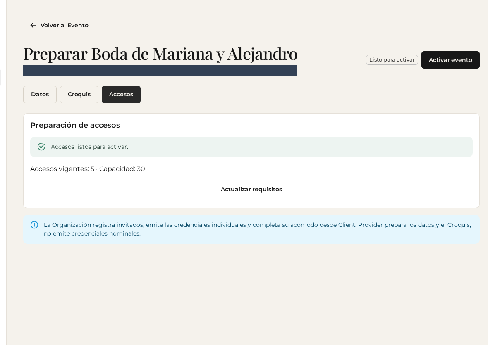
Escritorio · Ejemplo ficticio · Datos privados ocultos con franjas oscuras
Lo que debes verNo hay requisitos pendientes y el botón «Activar evento» está disponible. Si falta algo, resuélvelo con el responsable antes de continuar.
De la cuenta a la recepción
PASO 12Selecciona «Activar evento» y acepta la confirmación.
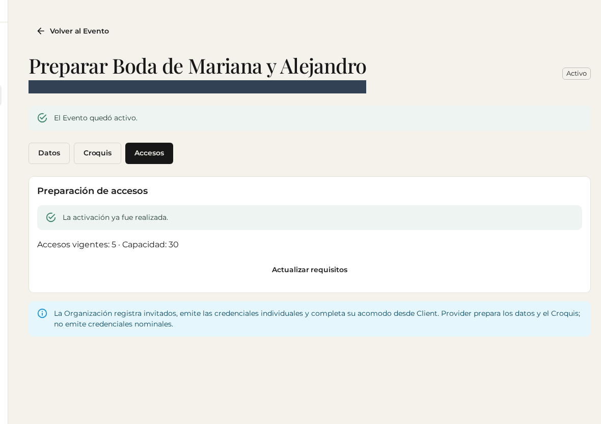
Escritorio · Ejemplo ficticio · Datos privados ocultos con franjas oscuras
Lo que debes verAparecen «El Evento quedó activo.» y «La activación ya fue realizada.». El salón ya puede preparar accesos para recepción.
De la cuenta a la recepción
PASO 13Abre el detalle del evento y busca «Ingresos y aforo». Selecciona «Actualizar» cuando necesites una lectura reciente.
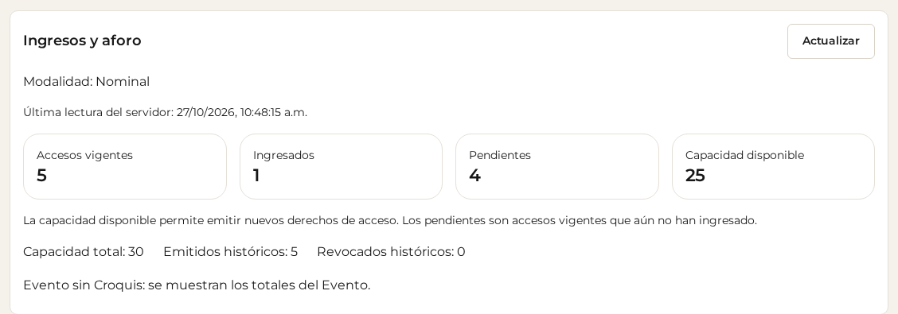
Escritorio · Ejemplo ficticio · Datos privados ocultos con franjas oscuras
Lo que debes verVes ingresos, pendientes y cupo disponible. El ejemplo tiene 1 ingreso y 4 pendientes; tu panel muestra los valores de tu evento.